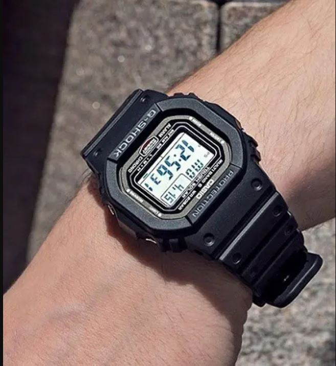
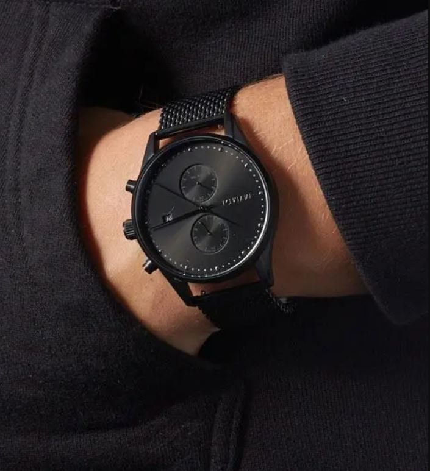
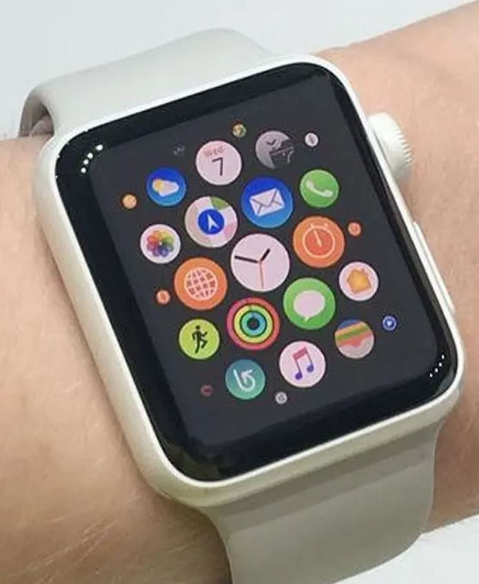

Sr No. |
Name |
Image |
About |
| 1 |
Digital Watches: |
 |
Digital watches made hour hands obsolete and instead flashes digits in the way of telling time. Running with electric power, these men’s watches are quick and reliable.
Digital watches emanate a certain vibe of always on the go. It looks sporty and sturdy and tech-savvy and flaunts a multi-feature design.. |
| 2 |
Analog Watches: |
 |
For the old-school souls, an analog men’s watch is a no-brainer buy.
Simple to read with a classic feel, analog watches have an hour hand, a minute hand, and sometimes a second hand. The dial in these types of watches is simple and professional with numbers written either numerically or in roman numeral form.
. |
| 3 |
Smart Watch: |
 |
These types of watches exude luxury with their functionality and design. From recording your footsteps to sending an urgent message, these kinds of watches are extremely user-friendly.
Smartwatches have become a status symbol and a mark of prestige. Giving commands to your watch is authoritative and makes you sound confident. Smartwatches are a long-term investment and definitely add value to your personality. |
/tr>